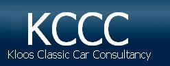
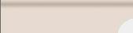
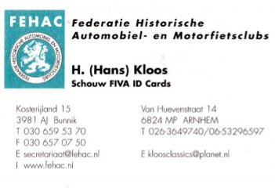
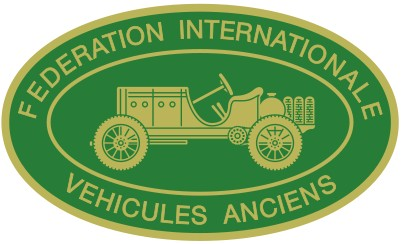
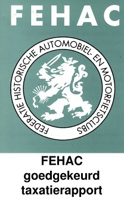

Begeleiding advies & taxaties
VOORKOMEN IS BETER DAN GENEZEN
Projectbegeleiding
- Als autoliefhebber is de tijd en de kennis niet altijd aanwezig om een restauratieproject
van een klassieke of historische automobiel in beeld te krijgen,te houden of op juiste wijze af te ronden.
- Een periodieke rapportage van mij over de gang en stand van zaken kan veel problemen voorkomen.
Advies
- U hebt één of meerdere klassiekers waarbij u twijfels heeft over de staat en/of kwaliteit.
- U bent, of er is al met de restauratie begonnen maar het project ligt stil, hoe verder?
- Mijn deskundig en onafhankelijk advies geeft u inzicht over hoe nu verder.
Zoek-, aankoop- en verkoopopdrachten
- U wilt de auto uit uw jeugd of dromen aanschaffen en u bent onbekend met de materie. Ik maak u wegwijs.
- U zoekt automobilia of specifieke autokunst: ik kan u helpen zoeken(netwerk & kennis sedert 1960).
- Ik regel voor u de aan- of verkoop van uw klassieker (privacy gegarandeerd).

Advies en keuring voor FIVA papieren
- U wilt met uw klassieke of historische automobiel aan rally`s, ritten of Internationale concoursen deelnemen.
Bijvoorbeeld Villa d Este, Mille Miglia,Tulpenrally etc.
- Hiervoor is een FIVA paspoort de zgn. IC card vaak vereist.
- Een duidelijk advies over de regels en uitgangspunten voor het verkrijgen van zo`n document is bij mij verkrijgbaar.
- Ik kan op uw verzoek al de FIVA papieren in orde maken, de IC aanvragen en de verplichte schouwing verrichten.
Taxaties en lezingen
- Taxaties volgens art 7.960 NBW (ex art 246 WvK), voor de verzekering van uw object, uitgevoerd volgens TMV/FEHAC normen.
- Een lezing voor uw club of vereniging of geïnteresseerd gezelschap over een automobiel onderwerp, de historie,
verzekeringen en/of taxaties behoort ook tot de mogelijkheden.
- Ik verblijf vaak in Haarlem. Dus ook voor taxaties in Haarlem e.o. bent u bij mij aan het goede adres.
